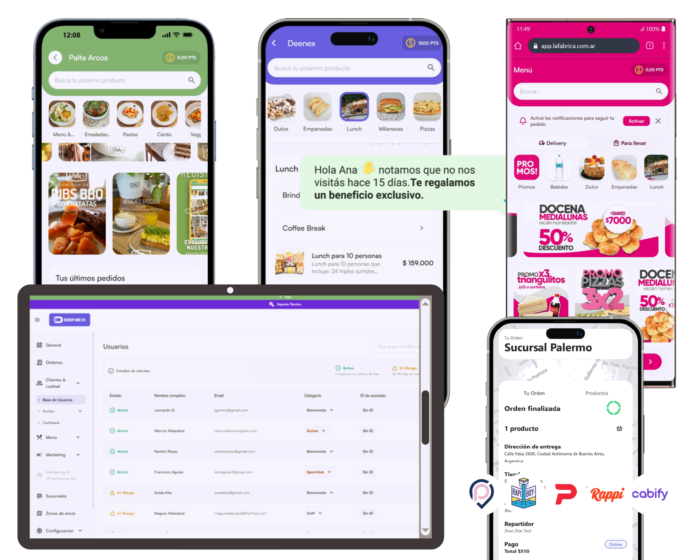
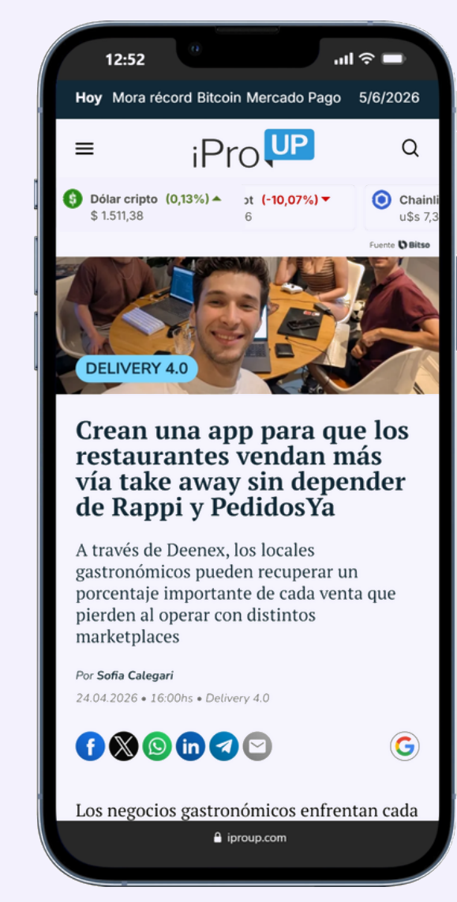
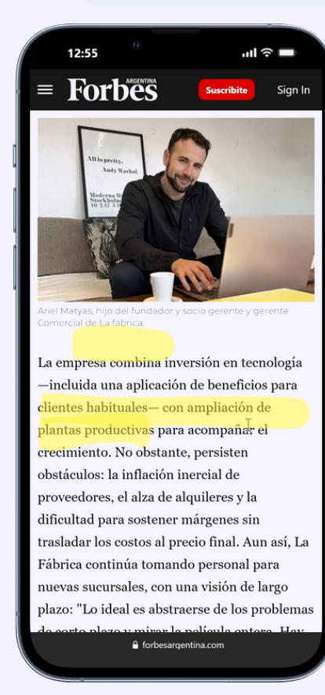
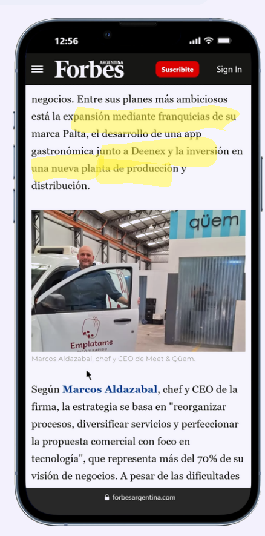
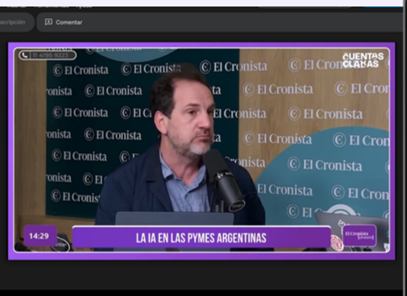
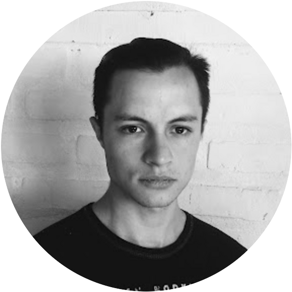

Tus clientesson tuyos.
La infraestructura que convierte cada pedido en un cliente que vuelve.
Deenex Technologies SAS · Buenos Aires, Argentina
15 marcas mid-market contratadas · +250 locales · US$ 15K de CMRR
8 operando hoy · el resto lanza este trimestre

El problema
El restaurante alquila a sus propios clientes.
La comisión
del ticket se lo lleva la app en cada pedido. Y algunos quedan atrapados por cláusulas de cuota mínima.
Los datos
datos del cliente vuelven a la marca: ni nombre, ni teléfono, ni frecuencia. El cliente queda registrado en la app, no en su base.
El problema
“Las apps son un gusano que te funde: 25.000 pedidos por mes y ni un cliente es mío.”
Federico · CEO y fundador de Monti, bar de pasta
La prueba
Nos pagaron para resolverlo.
facturados a clientes desde el día uno, sin un peso de capital externo.
US$ 60.000 por adelantado
dos marcas pusieron el capital antes de que el producto existiera
US$ 0 de capital externo
sin fondos, aceleradoras ni capital de riesgo
100% del desarrollo
pagado por clientes
El insight
El dato ya existe. Nadie lo usa.
Datos reales de Palta · +16.000 registros en 8 meses · las barras están a escala
La solución
Un sistema que cierra el loop.
01 · Captura
Canal propio: salón, take away y delivery, sin intermediarios.
02 · Dato
Cada pedido estructura cliente, frecuencia y canal. Es de la marca.
03 · Activación
Deenex Activa: IA que recupera clientes por WhatsApp, con atribución.
Captura y dato corren en las 8 cuentas que ya operan. Activa ya está en producción en las primeras y se está abriendo al resto.
Tracción
Ya está funcionando y lo pagan los clientes.
De CMRR contratado
Marcas mid-market
Locales
Operando hoy
Las marcas que ya eligieron Deenex
Una sola nota, sin inversión, generó +40 leads y 20 cuentas en pipeline.
Modelo
Cada cuenta crece sola.
Lo que cobramos · por cuenta / mes · ICP de 1 a 20 locales
Lo que genera · una sola cuenta
US$200.000vendidos por canal propio en 5 meses, sin comisión de marketplace y con el cliente registrado en la base de la marca.
El mismo volumen por una app habría dejado ~US$ 50.000 en comisiones.
Palta · enero a mayo 2026
Nuestras 15 cuentas contratadas promedian 17 locales cada una y ~US$1.000/mes. La escalera es el ICP nuevo —marcas de 1 a 20 locales— que es el que escala: menos revenue por cuenta, muchas más cuentas, cero venta enterprise.
De margen bruto
El objetivo
200 cuentas y US$ 500K de run-rate.
Cuentas operativas
ICP de 1 a 20 locales
Por cuenta / mes
suscripción + delivery + Activa
De run-rate anual
con EBITDA positivo sostenido
Cómo llegamos
Cierres por mes, hoy
Founder-led, sin SDR y sin un peso en paid media.
Cierres por mes, con la ronda
15–20Lo compran tres palancas concretas: onboarding productizado para que activar una cuenta no consuma horas de founder, referidos sistematizados —4 de nuestras primeras 8 cuentas llegaron así, sin sistema— y un SDR.
La ronda
No estamos levantando hoy.
En Q4 medimos la atribución real de Activa —la hipótesis más grande del plan— y ahí abrimos la ronda.
Lo que sí queremos ahora
Tres o cuatro conversaciones abiertas, para que cuando salga ese número no estemos empezando de cero.
Tus clientes
son tuyos.
Casos
Ya son dueñas de sus clientes.
15 locales y +4.000 pedidos por mes sin saber quién compraba. En 8 meses de canal propio: +16.000 clientes registrados. Hoy es la cuenta piloto donde corre Activa.
80 locales. Pusieron +US$ 25K para cocrear la plataforma antes de lanzar y operan sobre canal propio Deenex desde junio.
Mercado
2,6 millones de puntos de venta en LATAM.
2.000 cuentas al año 3 = 0,5% del mercado servible.
Por qué ahora
Fatiga de comisiones
15–35% por pedido erosiona el margen.
Giro al canal propio
el dato propio pasa a ser activo estratégico.
Commerce agéntico
redefine quién intermedia la relación.
Financiero
US$ 7,5M de revenue al año 3.
EBITDA positivo desde el mes 12
22% de margen al año 3
Gap máximo US$ 73K · el plan es default-alive
Las barras están a escala: el año 1 es el 2,8% del año 3.
Adquisición
Tenemos producto, tenemos ventas.
Deals abiertos
en pipeline hoy
Cierres documentados
en canales distintos
Primeras cuentas
llegaron por referido
Leads
de una sola nota de prensa




Equipo
Siete personas, cero pasajeros.
[Acá va la credencial más fuerte del equipo entero — la línea que hace que un inversor diga "estos pueden".]
Alan Tapia
Founder & CEO / CPO
[Antes fundó EMPRESA · AÑO–AÑO · resultado]Producto y tecnología. Dev AI y back-end. Lidera visión y ventas.
Joaquín Lombardi
Founder & COO
[Antes fundó EMPRESA · AÑO–AÑO · resultado]Estrategia y operación. Lidera la implementación de cada cuenta.
[X] años construyendo juntos antes de Deenex.

Leandro RebequiTech Lead[Construyó QUÉ para QUIÉN]La ronda
USD 250.000 pre-seed, SAFE.
Destino de los fondos
Cuentas operativas
Con atribución real
Sostenido
Cap table limpio
Cuándo se abre
Competencia